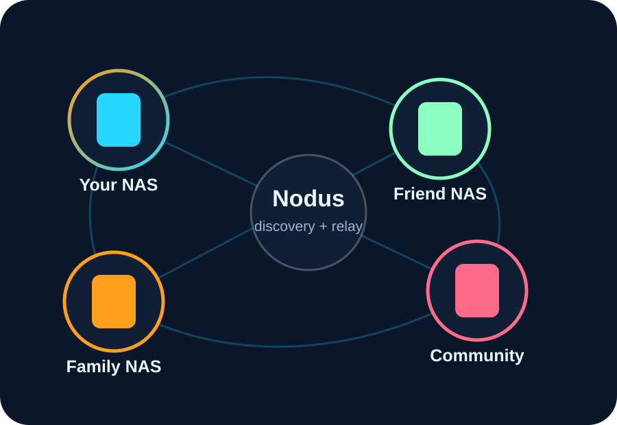

Now
Core NAS experience
Files, workspaces, sharing, upload links, photo and media app foundations, admin tools and user-facing UI polish.
This roadmap page keeps things high-level. It helps explain that DNA-Nexus is not just one app, but a foundation for personal storage, media, sharing and eventually community features.
Files, workspaces, sharing, upload links, photo and media app foundations, admin tools and user-facing UI polish.
File versioning, text comparisons, photo maps, metadata tools, image statistics and stronger sharing flows.
Social posts, album posts, reactions, comments and Memory Node posts where friends can add moments around the same event.
DNA-Nexus servers can discover and connect with each other so public/community content can travel without centralizing everyone’s media.

The big idea is not to replace one giant platform with another giant platform. It is to make personal and community NAS servers useful together.
The overview page is the one to link from the login screen first.